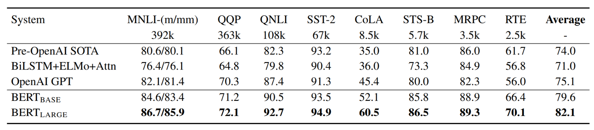
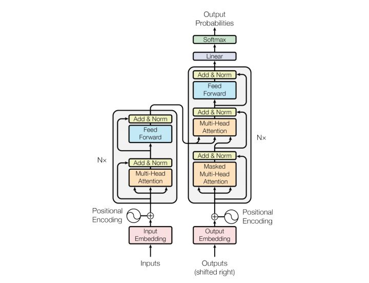
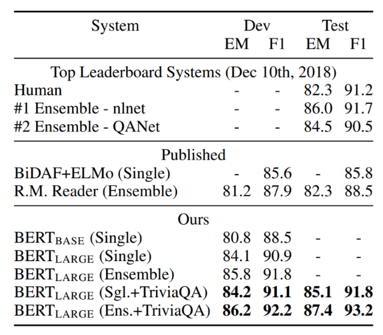
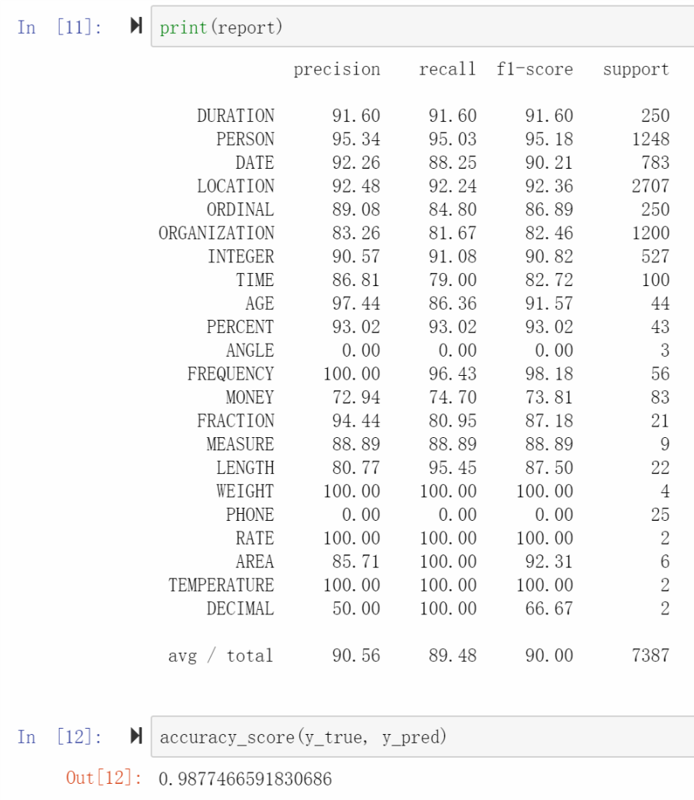
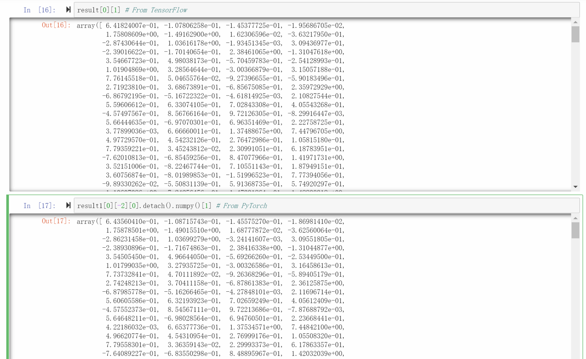
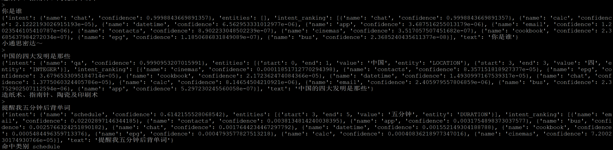

<!DOCTYPE html>
<html>
<head><meta name="generator" content="Hexo 3.9.0">
  <meta charset="utf-8">
  
<!-- Google Analytics -->
<script type="text/javascript">
(function(i,s,o,g,r,a,m){i['GoogleAnalyticsObject']=r;i[r]=i[r]||function(){
(i[r].q=i[r].q||[]).push(arguments)},i[r].l=1*new Date();a=s.createElement(o),
m=s.getElementsByTagName(o)[0];a.async=1;a.src=g;m.parentNode.insertBefore(a,m)
})(window,document,'script','//www.google-analytics.com/analytics.js','ga');

ga('create', 'UA-86850493-1', 'auto');
ga('send', 'pageview');

</script>
<!-- End Google Analytics -->


  
  <title>BERT相关的一些实践 | Geek boood&#39;s blog</title>
  <meta name="viewport" content="width=device-width, initial-scale=1, maximum-scale=1">
  <meta name="description" content="这篇文章是我在大三下时的选修课WEB搜索技术的期末个人学习报告。相关代码会在未来放出。">
<meta property="og:type" content="article">
<meta property="og:title" content="BERT相关的一些实践">
<meta property="og:url" content="https://geekboood.github.io/2019/07/30/BERT相关的一些实践/index.html">
<meta property="og:site_name" content="Geek boood&#39;s blog">
<meta property="og:description" content="这篇文章是我在大三下时的选修课WEB搜索技术的期末个人学习报告。相关代码会在未来放出。">
<meta property="og:locale" content="default">
<meta property="og:image" content="https://geekboood.github.io/2019/07/30/BERT相关的一些实践/image009.png">
<meta property="og:image" content="https://geekboood.github.io/2019/07/30/BERT相关的一些实践/image012.jpg">
<meta property="og:image" content="https://geekboood.github.io/2019/07/30/BERT相关的一些实践/image011.png">
<meta property="og:image" content="https://geekboood.github.io/2019/07/30/BERT相关的一些实践/image015.png">
<meta property="og:image" content="https://geekboood.github.io/2019/07/30/BERT相关的一些实践/image017.png">
<meta property="og:image" content="e:/CloudStation/%E5%8D%9A%E5%AE%A2/BERT%E7%9B%B8%E5%85%B3%E7%9A%84%E4%B8%80%E4%BA%9B%E5%AE%9E%E8%B7%B5/image003.png">
<meta property="og:image" content="e:/CloudStation/%E5%8D%9A%E5%AE%A2/BERT%E7%9B%B8%E5%85%B3%E7%9A%84%E4%B8%80%E4%BA%9B%E5%AE%9E%E8%B7%B5/image005.png">
<meta property="og:image" content="e:/CloudStation/%E5%8D%9A%E5%AE%A2/BERT%E7%9B%B8%E5%85%B3%E7%9A%84%E4%B8%80%E4%BA%9B%E5%AE%9E%E8%B7%B5/image007.png">
<meta property="og:image" content="https://geekboood.github.io/2019/07/30/BERT相关的一些实践/image019.png">
<meta property="og:updated_time" content="2019-07-31T04:04:03.481Z">
<meta name="twitter:card" content="summary">
<meta name="twitter:title" content="BERT相关的一些实践">
<meta name="twitter:description" content="这篇文章是我在大三下时的选修课WEB搜索技术的期末个人学习报告。相关代码会在未来放出。">
<meta name="twitter:image" content="https://geekboood.github.io/2019/07/30/BERT相关的一些实践/image009.png">
  
    <link rel="alternate" href="/atom.xml" title="Geek boood&#39;s blog" type="application/atom+xml">
  
  
    <link rel="icon" href="/favicon.png">
  
  
    <link href="//fonts.googleapis.com/css?family=Source+Code+Pro" rel="stylesheet" type="text/css">
  
  <link rel="stylesheet" href="/css/style.css">
</head>
</html>
<body>
  <div id="container">
    <div id="wrap">
      <header id="header">
  <div id="banner"></div>
  <div id="header-outer" class="outer">
    <div id="header-title" class="inner">
      <h1 id="logo-wrap">
        <a href="/" id="logo">Geek boood&#39;s blog</a>
      </h1>
      
    </div>
    <div id="header-inner" class="inner">
      <nav id="main-nav">
        <a id="main-nav-toggle" class="nav-icon"></a>
        
          <a class="main-nav-link" href="/">Home</a>
        
          <a class="main-nav-link" href="/archives">Archives</a>
        
      </nav>
      <nav id="sub-nav">
        
          <a id="nav-rss-link" class="nav-icon" href="/atom.xml" title="RSS Feed"></a>
        
        <a id="nav-search-btn" class="nav-icon" title="Search"></a>
      </nav>
      <div id="search-form-wrap">
        <form action="//google.com/search" method="get" accept-charset="UTF-8" class="search-form"><input type="search" name="q" class="search-form-input" placeholder="Search"><button type="submit" class="search-form-submit">&#xF002;</button><input type="hidden" name="sitesearch" value="https://geekboood.github.io"></form>
      </div>
    </div>
  </div>
</header>
      <div class="outer">
        <section id="main"><article id="post-BERT相关的一些实践" class="article article-type-post" itemscope itemprop="blogPost">
  <div class="article-meta">
    <a href="/2019/07/30/BERT相关的一些实践/" class="article-date">
  <time datetime="2019-07-29T16:00:00.000Z" itemprop="datePublished">2019-07-30</time>
</a>
    
  </div>
  <div class="article-inner">
    
    
      <header class="article-header">
        
  
    <h1 class="article-title" itemprop="name">
      BERT相关的一些实践
    </h1>
  

      </header>
    
    <div class="article-entry" itemprop="articleBody">
      
        <p>这篇文章是我在大三下时的选修课WEB搜索技术的期末个人学习报告。相关代码会在未来放出。</p>
<a id="more"></a>
<h1 id="BERT"><a href="#BERT" class="headerlink" title="BERT"></a>BERT</h1><p>Devlin, J., Chang, M.-W., Lee, K., &amp; Toutanova, K. (2019). BERT: Pre-training of Deep Bidirectional Transformers for Language Understanding. North American Chapter of the Association for Computational Linguistics.</p>
<h2 id="模型介绍"><a href="#模型介绍" class="headerlink" title="模型介绍"></a>模型介绍</h2><p>BERT全称是Pre-training of Deep Bidirectional Transformers for Language Understanding，是Google在2018年发布的模型。该论文发表在NAACL 2019上。该模型一经推出就刷新了十几个NLP比赛的排行榜，引起了极大的反响。</p>
<p>BERT使用了Transformer的结构，而Transformer来自论文《Attention Is All You Need》。BERT的基础模型有12层Transformer，大模型有24层Transformer。因此BERT这篇论文在模型结构上并没有创新。在训练时，使用大规模的语料对其进行预训练，然后在此基础上再针对不同任务进行fine tune。预训练时有两个步骤，第一个步骤是随机遮盖住一篇文章中15%的token，让模型去预测遮盖住的词汇。第二个步骤是让模型去预测两个语句是不是连续的两个语句。作者这样做是想让模型学习token间的深度双向关系，以及文章中语句的关系。</p>
<p></p>
<p>图表 1 BERT在GLUE上的测试结果</p>
<p></p>
<p>图表 2 Transformer 模型结构</p>
<p></p>
<p>图表 3 BERT在SQuAD v1.1上的性能</p>
<p>BERT的性能如图所示。GLUE是一个自然语言任务集合，包含蕴含关系推断、问题对是否等价、句子是否回答问句等任务。从图中我们可以看到BERT全面超越以前的模型，而且BERT large模型的性能跟BERT base相比也有很大的提升。在这里我还贴了在SQuAD v1.1上的结果，方便和DRQA中的模型做对比。如图所示，BERT large模型的F1 score可以达到90.9，而DRQA中的reader模型只有78.8，提升还是非常明显的。并且BERT只需要输入文本即可，不需要其他工具抽取特征，系统结构更为简单。</p>
<p>Google还发布了BERT的预训练模型，有英文、中文以及104种语言的多语言模型。</p>
<h2 id="想法"><a href="#想法" class="headerlink" title="想法"></a>想法</h2><p>BERT模型的出现是2018年的一件大事，到现在也有了很多应用。最基础的就是使用BERT代替词向量，使用模型倒数第二层池化前的向量作为词向量，池化后的向量还可以用来表示句子，并用这些向量表示文本然后训练模型。</p>
<p>BERT模型的训练的成本极大，Google使用专用硬件TPU进行训练，到现在也很少有人或公司能自己去训练BERT。其实这象征着资本在深度学习这一领域越来越重要，未来很少有个人或实验室能玩转这种体量的模型，大家也就不用谈这种程度上的创新，只能跟着这些巨头发发paper。</p>
<p>其实在BERT发布后还有很多新模型出现，他们的效果也比BERT要好一些，但是一来这些人不像Google这么会宣传，二来他们也没有放出这么多的预训练模型，所以也就没有那么出名。</p>
<p>个人感觉比较遗憾的是BERT没有发布只有中英文两种语言的混合模型。当前很多中文文本中都不可避免的混杂了英文，比如苹果的全系列产品等。这些模型在BERT的中文预训练模型中是无法表示的，所有在使用时会造成一些语义的缺失。那个104种语言的模型太过冗杂，官方repo上也证实了它在XNLI上效果比单一语言模型要下降三个百分点左右[4]。</p>
<p>更有意思的是，在官方repo里有人提issue，问使用BERT是不是一种作弊[5]。首先你使用维基百科的语料对模型进行预训练，然后你又在从维基百科中抽取数据的SQuAD数据集上进行预测，明显绕来绕去又绕回来了。有一些人在里面解释说不是这样的，BERT只是学习了预测被遮盖住的词汇，也有人说BERT是被过誉的。我个人对此持保留观点。首先BERT模型深，学习能力很强，你又去让他学习被遮盖住的词，所以它内部是学习到了一些语义上的东西。但是这些语义上的东西具体是什么没人知道。然后你让他去学习机器阅读理解，从维基百科的语料中找出answer span，保不齐模型就用了一些奇怪的特征。最保险的做法是把SQuAD涉及到的文章从预训练的语料中去掉，再重新走一遍流程。深度学习界以前就出现过乌龙事件。有人利用pix2pix这样的模型将卫星图像翻译成语义地图，然后再把语义地图翻译成卫星图像。但是模型在利用卫星地图生成的语义地图中加入了一些肉眼看不到的纹理特征，并在把语义地图翻译回卫星图像时利用了这些纹理特征，并得到了很高的精度。显然这样做是存在问题的，并且深度学习模型的性能都很强，你不知道它会抽取出什么样的特征。</p>
<h2 id="实践"><a href="#实践" class="headerlink" title="实践"></a>实践</h2><p>因为BERT模型的效果较好，我在三个地方都用到了它。</p>
<p>第一个就是想用它来替换ODQA中的reader模型，这次我使用了台湾人的DRCD数据集，并使用OpenCC[6]将繁体中文转换为简体中文。我将原始文本按字符分割，并输入到模型中，训练了一个epoch，在验证集上得到的F1 score是79.82，感觉还是不错的（毕竟数据集比SQuAD小那么多）。</p>
<p>第二个实践是在MSRA-NER语料上训练命名实体识别模型。这个语料有22种命名实体，训练后的report如下图所示。</p>
<p></p>
<p>图表 4 BERT在MSRA-NER上的性能</p>
<p>从结果上来看OA的数值似乎不错，但是angle和phone完全没识别出来。这两类样本较少可能是原因之一，另外一个原因可能是BERT的分词器的问题。BERT的分词器默认使用贪心算法，从字符表中寻找对应的token id。然而这种分词方法对于数字的表示是存在很大问题的。具体情况还要再研究一下。</p>
<p>第三个实践是使用BERT来生成词向量。其实GitHub上以及有一个这样的项目[7]了，但是那个项目是基于TensorFlow的，而我想整个系统都使用PyTorch，因此我就自己写了一个，具体效果如下图所示。但是看起来还有一点小问题。两个框架原始的预训练模型都是一样的，但是获得的词向量却有0.01-0.02的差距，具体原因还有待调查。</p>
<p></p>
<p>图表 5 通过TensorFlow和PyTorch在BERT上抽取词向量</p>
<h2 id="Reading-Wikipedia-to-Answer-Open-Domain-Questions"><a href="#Reading-Wikipedia-to-Answer-Open-Domain-Questions" class="headerlink" title="Reading Wikipedia to Answer Open-Domain Questions"></a>Reading Wikipedia to Answer Open-Domain Questions</h2><p>Chen, D., Fisch, A., Weston, J., &amp; Bordes, A. (2017). Reading Wikipedia to Answer Open-Domain Questions. In Proceedings of the 55th Annual Meeting of the Association for Computational Linguistics (Volume 1: Long Papers) (Vol. 1, pp. 1870–1879).</p>
<h3 id="模型介绍-1"><a href="#模型介绍-1" class="headerlink" title="模型介绍"></a>模型介绍</h3><p>这篇文章是Stanford 的博士生陈丹琦在 FAIR 实习期间的工作，发表在 ACL2017 上。ODQA (Open Domain Question Answering) 是利用深度学习技术在非结构化的文档库中寻找指定问题的答案。在这篇文章中，作者将整个系统分为三个模块，分别是阅读理解，文档抓取以及数据库。</p>
<p>阅读理解这部分模型是在之前AttentiveReader基础上的成果。改进后模型也是属于RNN的模型。其中encoder有两个，一个是问题的encoder，另外一个是文档的encoder。在文字的处理上，首先对问题和段落的文本进行分词，得到tokens。在段落的编码上使用了三类特征。第一类特征是由word2vec得到的embedding， 第二个特征是这个token是否属于问题的tokens的二元特征，第三类特征是token特征，包含使用Stanford大学CoreNLP得到的POS、NER，还有单独的TF特征。对于问题就直接使用一个RNN对问题tokens得到的word embedding进行编码。在得到问题和段落经过RNN编码后的向量后，分别训练两个矩阵与向量相乘得到两个参数，从而得到answer span。在这篇论文中，作者使用SQuAD、Web Questions等数据集。下图中展示了该模型在SQuAD数据集上的性能。如图所示，在Dev集上F1 score达到了78.8，在Test集上F1 score达到了79.0。</p>
<p></p>
<p>图表 6 DrQA的Reader在SQuAD上的性能</p>
<p>对于retriever部分，作者使用了TF/IDF算法得到在数据库中相关度排名前五的段落，同时得到相关度的分数，然后再将段落与问题同时在阅读理解模型中进行推导，得到对应的answer span以及分数。最后综合两个分数，得到可能性最大的answer span。作者使用Wikipedia的英文语料来训练TF/IDF模型，并放入到数据库中。</p>
<p></p>
<p>图表 7 输入不同特征对于模型性能的影响</p>
<p>作者还讨论了去掉一些特征对于模型性能的影响，如上图所示。我们可以看到aligned和exact match两者对于模型性能的作用类似，但是二者必须存在一个。</p>
<h3 id="相关数据集"><a href="#相关数据集" class="headerlink" title="相关数据集"></a>相关数据集</h3><p>下表是MRC相关的一些数据集，其中SQuAD v1.1，CMRC2018和DRCD都会在下文涉及到，他们的结构也都是相似的。</p>
<table>
<thead>
<tr>
<th>名称</th>
<th>语言</th>
<th>数据集大小（问题数）</th>
</tr>
</thead>
<tbody><tr>
<td>SQuAD v1.1[1]</td>
<td>英语</td>
<td>100,000+</td>
</tr>
<tr>
<td>SQuAD v2.0</td>
<td>英语</td>
<td>150,000+</td>
</tr>
<tr>
<td>CMRC2018[2]</td>
<td>简体中文</td>
<td>21,258</td>
</tr>
<tr>
<td>DRCD[3]</td>
<td>繁体中文</td>
<td>30,000+</td>
</tr>
</tbody></table>
<h3 id="想法-1"><a href="#想法-1" class="headerlink" title="想法"></a>想法</h3><p>个人认为这篇论文主要贡献在于开放领域问答系统这个概念以及相关实现。实际上作者的reader部分模型虽然有一些精度上的提高，但是这个模型过于依赖输入的特征，也过于依赖Stanford的CoreNLP系统。而且这个系统的retriever部分只使用了一个TF/IDF特征，有时抽取出来的相关文章并不是很准，后续还有一些论文在这方面做改进。</p>
<p>由于模型结构原因，模型只能得出每个token作为答案起始以及答案结束的概率，所以得出的答案只能是复制原文中的一部分，这也是这类模型的一个限制。虽然以前有人提出过CopyNet这样的模型，能够在生成回应时复制原文中的一部分，可是我没有找到该模型在阅读理解领域的相关论文。</p>
<p>使用ODQA的好处是直接在原始文档上抽取答案，而不是生成知识图谱然后生成答案，这也是我更倾向于ODQA的一个原因。知识图谱需要维护，很多实体关系一来不是100%准确，二来需要随时间进行更新，而使用ODQA的话直接更新文档库中的文档即可。但是ODQA会消耗大量计算资源，每次都要把问题和文档一起送入网络才能得到答案。</p>
<h3 id="实践-1"><a href="#实践-1" class="headerlink" title="实践"></a>实践</h3><p>我在CMRC2018以及中文维基百科语料上面训练了一个中文的版本，效果如图。CMRC2018是一个中文机器阅读理解数据集，其结构与SQuAD类似。我将数据格式与SQuAD对其后，使用中文的CoreNLP包替换掉原始的英文版本，并按照ODQA的全套流程进行训练。</p>
<p>经测试，reader部分在Dev数据集上面exact match分数为49.52，而在SQuAD v1.1上面的exact match分数为65.66，相比之下低了不少。个人感觉可能是因为CoreNLP对于中文的支持不好（在使用过程中CoreNLP对于CJK字符集无法进行分词等操作，这个bug到现在也没修复）。而且CMRC2018数据集与SQuAD相比小太多。</p>
<p>整个中文ODQA的运行效果如下图所示。</p>
<p></p>
<p>图表 8 中文版DrQA的效果</p>
<p>使用BERT来替代DrQA的Document Reader能够带来大幅的性能提升。目前这部分代码还在施工中。</p>
<h1 id="综合实践"><a href="#综合实践" class="headerlink" title="综合实践"></a>综合实践</h1><p>在今年的一个项目中，我实现了一个比较综合的智能音箱的NLP系统，其中包含intent classifier，NER，ODQA以及一个chatbot。该系统具体效果如下图所示。</p>
<p></p>
<p>其中intent classifier由Facebook提出的StarSpace中的文本分类模型组成，在语音助手语料上面进行训练，加上qa类别后一共支持32种意图的识别。图片中第一个例子的提问是“你是谁”，命中了chat类别，回答如图所示。该回答由一个seq2seq模型得出，这个模型使用小黄鸡语料进行训练。第二个问题是“中国的四大发明是那些”，该问题命中qa类别，回答由DrQA模型（即第一部分的Reading Wikipedia to Answer Open-Domain Questions，训练过程见该部分的个人实践）得出。第三个问题是“提醒我五分钟后背单词”，命中类别schedule，这个问题主要用来展示NER的功能。NER模型由第二部分的BERT-NER组成，支持22种实体的识别。如图所示，能够成功识别出“5分钟”为DURATION。</p>
<p>在将来我主要想在模型的融合和系统的设计上改进这个NLP系统。现在这个系统由四个独立的模型组成，有一些冗余的部分比如说NER和ODQA还有chatbot都是由encoder和decoder组成的，他们能不能共用一个encoder和不同的attention，各自使用各自的decoder，这样来复用一些参数来减小模型的体积。在系统的设计上能不能将整个系统改成在线式训练，在新的语料加入后自动进行训练以及评测，还有错误案例分析等功能。</p>
<ol>
<li><a href="https://rajpurkar.github.io/SQuAD-explorer/" target="_blank" rel="noopener"><span class="underline">https://rajpurkar.github.io/SQuAD-explorer/</span></a></li>
<li><a href="https://hfl-rc.github.io/cmrc2018/" target="_blank" rel="noopener"><span class="underline">https://hfl-rc.github.io/cmrc2018/</span></a></li>
<li><a href="https://github.com/DRCKnowledgeTeam/DRCD" target="_blank" rel="noopener"><span class="underline">https://github.com/DRCKnowledgeTeam/DRCD</span></a></li>
<li><a href="https://github.com/google-research/bert/blob/master/multilingual.md" target="_blank" rel="noopener"><span class="underline">https://github.com/google-research/bert/blob/master/multilingual.md</span></a></li>
<li><a href="https://github.com/google-research/bert/issues/514" target="_blank" rel="noopener"><span class="underline">https://github.com/google-research/bert/issues/514</span></a></li>
<li><a href="https://github.com/BYVoid/OpenCC" target="_blank" rel="noopener"><span class="underline">https://github.com/BYVoid/OpenCC</span></a></li>
<li><a href="https://github.com/hanxiao/bert-as-service" target="_blank" rel="noopener"><span class="underline">https://github.com/hanxiao/bert-as-service</span></a></li>
</ol>

      
    </div>
    <footer class="article-footer">
      <a data-url="https://geekboood.github.io/2019/07/30/BERT相关的一些实践/" data-id="cjyqra6bc00026xsfssv6buvo" class="article-share-link">Share</a>
      
      
    </footer>
  </div>
  
    
<nav id="article-nav">
  
  
    <a href="/2019/07/30/用Kubernetes建立实验集群/" id="article-nav-older" class="article-nav-link-wrap">
      <strong class="article-nav-caption">Older</strong>
      <div class="article-nav-title">用Kubernetes建立实验集群</div>
    </a>
  
</nav>

  
</article>

</section>
        
          <aside id="sidebar">
  
    

  
    

  
    
  
    
  <div class="widget-wrap">
    <h3 class="widget-title">Archives</h3>
    <div class="widget">
      <ul class="archive-list"><li class="archive-list-item"><a class="archive-list-link" href="/archives/2019/07/">July 2019</a></li><li class="archive-list-item"><a class="archive-list-link" href="/archives/2017/09/">September 2017</a></li><li class="archive-list-item"><a class="archive-list-link" href="/archives/2017/03/">March 2017</a></li><li class="archive-list-item"><a class="archive-list-link" href="/archives/2017/02/">February 2017</a></li><li class="archive-list-item"><a class="archive-list-link" href="/archives/2017/01/">January 2017</a></li><li class="archive-list-item"><a class="archive-list-link" href="/archives/2015/07/">July 2015</a></li></ul>
    </div>
  </div>


  
    
  <div class="widget-wrap">
    <h3 class="widget-title">Recent Posts</h3>
    <div class="widget">
      <ul>
        
          <li>
            <a href="/2019/07/30/BERT相关的一些实践/">BERT相关的一些实践</a>
          </li>
        
          <li>
            <a href="/2019/07/30/用Kubernetes建立实验集群/">用Kubernetes建立实验集群</a>
          </li>
        
          <li>
            <a href="/2019/07/30/移动端深度学习的现状与分析/">移动端深度学习的现状与分析</a>
          </li>
        
          <li>
            <a href="/2017/09/04/微博与Elastic的亿级数据实践/">微博与elastic的亿级数据实践</a>
          </li>
        
          <li>
            <a href="/2017/03/25/使用微博语料训练词向量/">使用微博语料训练词向量</a>
          </li>
        
      </ul>
    </div>
  </div>

  
</aside>
        
      </div>
      <footer id="footer">
  
  <div class="outer">
    <div id="footer-info" class="inner">
      &copy; 2019 Geek boood<br>
      Powered by <a href="http://hexo.io/" target="_blank">Hexo</a>
    </div>
  </div>
</footer>
    </div>
    <nav id="mobile-nav">
  
    <a href="/" class="mobile-nav-link">Home</a>
  
    <a href="/archives" class="mobile-nav-link">Archives</a>
  
</nav>
    

<script src="//ajax.googleapis.com/ajax/libs/jquery/2.0.3/jquery.min.js"></script>


  <link rel="stylesheet" href="/fancybox/jquery.fancybox.css">
  <script src="/fancybox/jquery.fancybox.pack.js"></script>


<script src="/js/script.js"></script>


  </div>
</body>
</html>